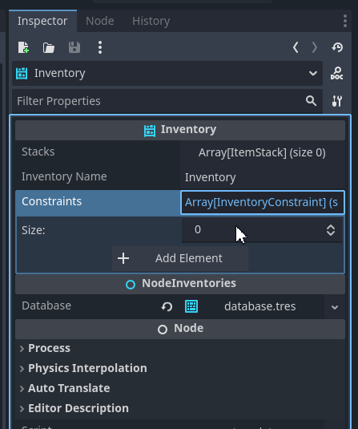
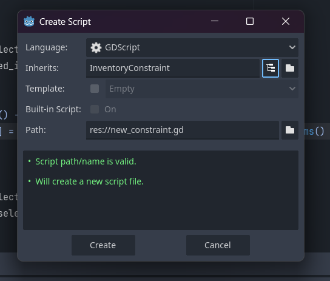

Constraints
At some point in the development of your game you will want to create and maintain rules for which items can be added to your inventories. This is easily achieved with InventoryConstraint. With them you can define one or more rules for how your items are added, rules for accepting only one or more categories, the size of the item on the grid or its weight. You can also customize it like any other rule.
How to use it
To use the constraints you need to create a new resource that extends type InventoryConstraint and add it to your inventory. You can do this in the editor or in code.
Note
The constraints are not automatically added to the inventory, you need to do it manually. You can add as many constraints as you want, but be careful with the performance of your game. The more constraints you have, the more checks will be made when adding items to the inventory. It is recommended to use only one or two constraints per inventory.
You can add it in the inventory inspector by adding a new element and setting it to the constraint that you want, in the example below a constraint/rule is placed that all items in stacks can only have a maximum size of 2 in the stack.
Creating a custom constraint
Create a new script and add choose extend InventoryConstraint or GridInventoryConstraint case you want to use the grid inventory.
You have 4 functions to expand, let’s demonstrate the use of _can_add_new_stack_on_inventory by limiting the amount of stacks you can have in your inventory:
extends "res://addons/inventory/constraints/inventoryconstraint.gd"
# This is the function that will be called when the item is added to the inventory
func _can_add_new_stack_on_inventory(inventory: Node, item_id: String, amount: int, properties: Dictionary) -> bool:
return inventory.stacks.count <= 2
This code above limits your inventory to only having 2 stacks, that is, if these two stacks fill all other items that you call with the add or transfer function will not be made and will return the excess number of items that were not added. You can see more about them in the InventoryConstraint and GridInventoryConstraint API documentation.